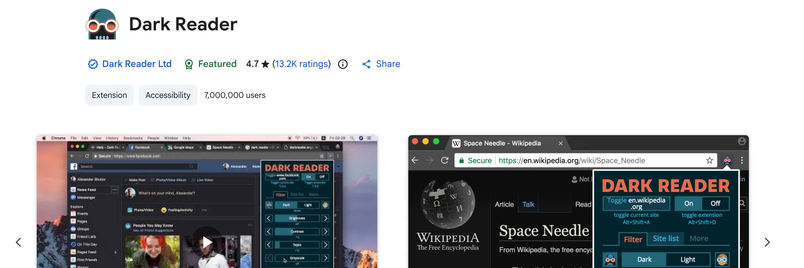
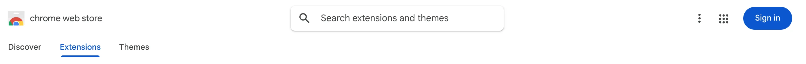
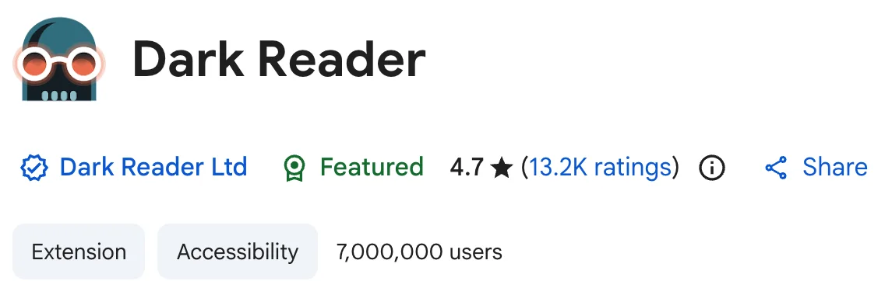
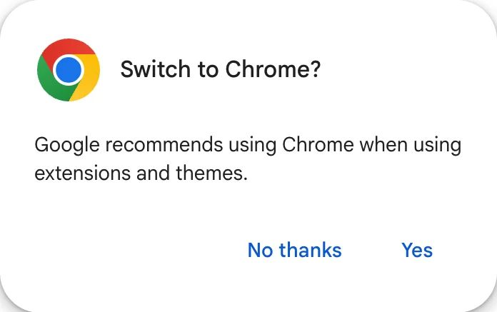
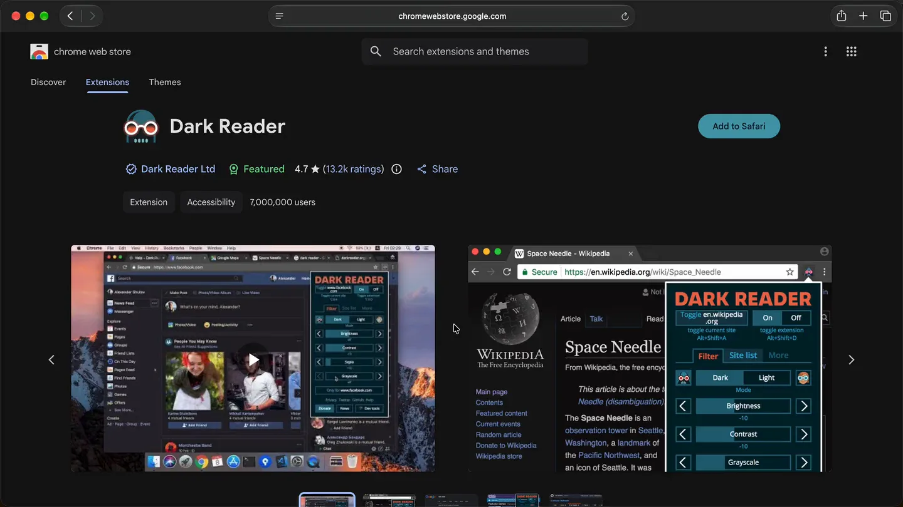

In Safari, every listing in the Chrome Web Store ends in a button you can't press.
“Add to Chrome” becomes “Add to Safari.”
With Viaduct installed, the button points at Safari instead. Click it once and Viaduct does the rest.
One click, and it's in Safari.
Viaduct fetches the extension, converts it and signs it, right there on the store page.
Switch it on once in Safari's settings, like any other extension.
Dark Reader is in the toolbar, running inside Safari.

Converting isn't the hard part. Working is.
Safari implements dozens of chrome.* APIs differently, or not at all, so a converted extension installs fine and then quietly stops working. Viaduct ships a runtime layer that patches the gaps.
60+
chrome.* namespaces the runtime layer normalizes, so your extension keeps working after the move.
BreaksPopup buttons go dead. Background ports route by an extension id that Safari reports differently.
FixedViaduct rewrites the id so the popup reaches the background.
BreaksIts own bundled resources fail to load. Safari's resource server is case sensitive.
FixedViaduct normalizes the casing.
BreaksSafari omits onInstalled and parts of self.registration, so the worker throws at load.
FixedViaduct backfills what's missing.
BreaksSafari exposes chrome.* as immutable native objects, so extensions that patch them crash at startup.
FixedViaduct makes them writable again.
Now try yours.
See what Viaduct finds inside your extension.
Or look inside one of these
Native conversion, done properly.
Keeps Safari's battery life
Converted extensions run inside Safari's native engine, not a second Chromium process running in the background. Faster, and far easier on your battery.
2
engines running if you keep Chrome around for one extension
1
with Viaduct. The extension lives inside Safari
Keeps itself up to date
Viaduct and its conversion engine update themselves, so new fixes arrive without you reinstalling anything.
Auto-updating extensions
Installed an extension from the Chrome Web Store? Turn on weekly updates in Pro, and when it ships a new version Viaduct rebuilds and reinstalls it for you.
MV2 & MV3 aware
Converts Manifest V2 and V3 extensions. If one can't work in Safari, Viaduct tells you before it converts. If the maker ships an official Safari version, it points you there.
Import from Chrome
Viaduct lists the extensions already installed in Chrome, Brave, Edge, Arc, Vivaldi, Opera or Chromium. Pick the ones you want and it converts them in one batch, saved settings included.
Works with Shortcuts
Shortcuts gets two actions: Convert Chrome Extension and List Converted Extensions.
Moves to a new Mac
Export your converted extensions from Settings, import the file on the new Mac, and Viaduct converts them again there.
Start free. Go Pro when it sticks.
Free
$0
- Convert up to 2 extensions
- “Add to Safari” Web Store button
- Extensions kept for 7 days
Viaduct Pro
$19one time
- Unlimited conversions
- “Add to Safari” Web Store button
- Extensions kept forever
- Weekly Web Store updates
Questions
Will my Chrome extension actually work?
Most do. Before converting, Viaduct checks the extension and tells you if it can't work in Safari, for example when a file it needs is missing. Features built on Chrome-only APIs, like some OAuth sign-in flows, still won't work after conversion. If the maker ships an official Safari version, Viaduct points you to it.
What do I need to run it?
A Mac on macOS 13 or later, and Xcode, which is free from Apple. Apple requires Xcode to sign extensions; Viaduct drives it for you, so you never have to open it. Free and Pro need the same.
Do I need to know how to code?
No. Drop an extension in and get it in Safari. Viaduct does the building and the signing.
Does it run on an Intel Mac?
Yes. Viaduct is a universal app, so the same download runs natively on Intel and Apple Silicon. There's one build, not two, and Rosetta never comes into it.
What's the difference between Free and Pro?
Free gives you 2 conversions that are removed after a week. Pro is unlimited and keeps your extensions installed. One-time $19, yours forever.
Why isn't this on the Mac App Store?
The build tools Viaduct drives aren't allowed inside the App Store sandbox, so it ships as a notarized direct download instead. Same Apple notarization, just outside the store.